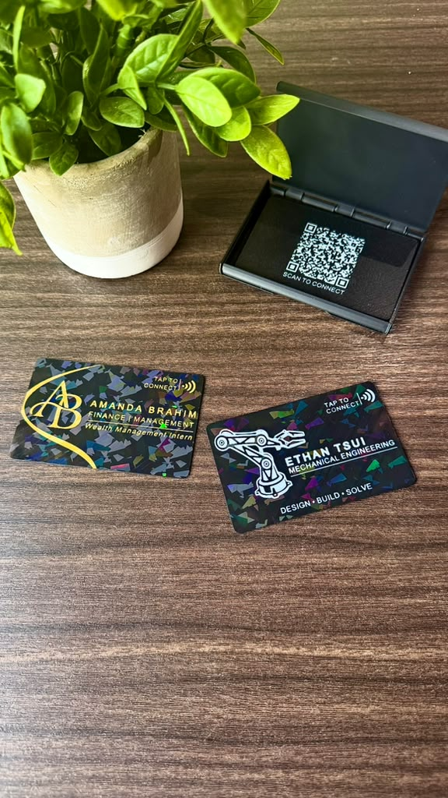
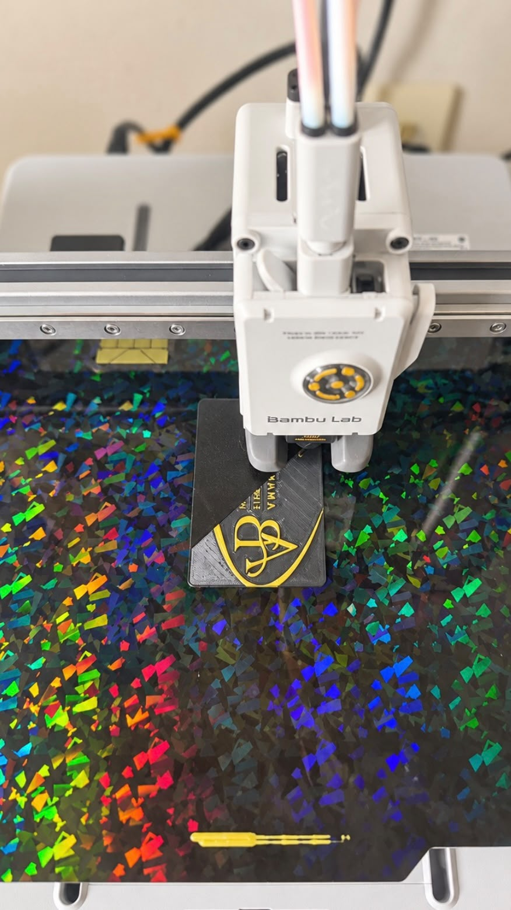
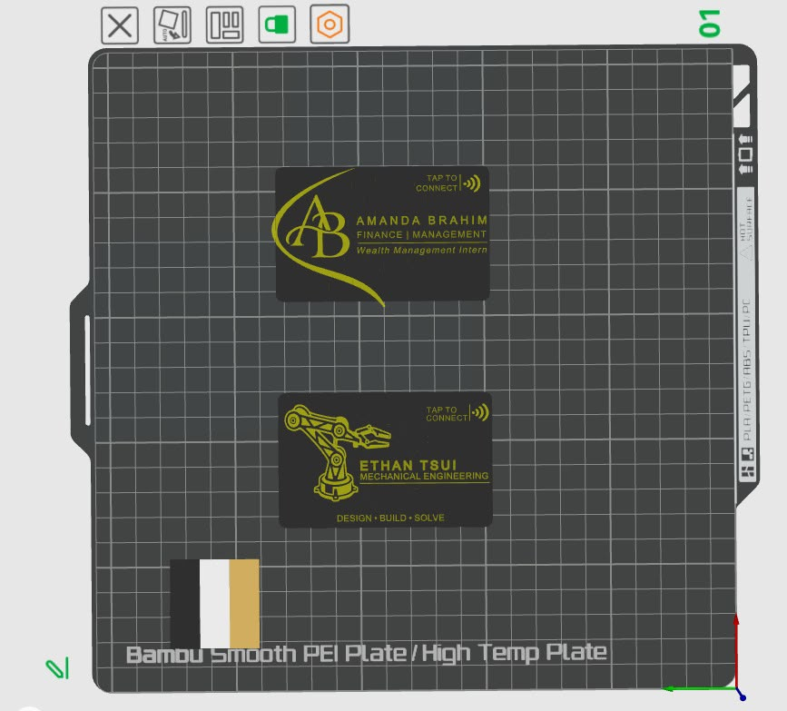

JOHN DOEPROFESSIONAL TITLE
TAP TO CONNECTQR
AREA
SCAN TO CONNECTAREA
01 / CONCEPT
Executive
Quiet typography and balanced spacing.
Finance · consulting · managementETHAN TSUI · PRODUCT ENGINEERING
A personal exploration of digital connection through precision additive manufacturing. One thin card, two ways to connect.
Explore the concepts ↓Engineering portfolio ↗
PHYSICAL RESULTS
Real prototypes, printed individually with two filament colors and a manual NFC insertion pause.


01 / DESIGN EXPLORATION
Explore how the same manufacturing architecture can support distinct visual identities. These are digital concepts, not a product catalog or validated production templates.
01 / CONCEPT
Quiet typography and balanced spacing.
Finance · consulting · management02 / CONCEPT
Overlapping initials and a sweeping accent.
Personal branding · hospitality · luxury03 / CONCEPT
A simplified robotic-arm motif inspired by Project Atlas.
Engineering · technology · research04 / CONCEPT
Bold initials and a geometric composition.
Creative disciplines · marketing · students05 / CONCEPT
A simple emblem with a clear identity hierarchy.
Organizational identity · team conceptsEach concept uses two filament colors. Three-color printing has not been tested. Preview colors are illustrative; actual filament, contrast, graphic size and surface finish affect printability. Reverse view uses a non-scannable QR placement placeholder.
02 / ENGINEERING
Printed on a Bambu Lab A1 using a 0.2 mm nozzle, 0.10 mm layers and multicolor PLA. The front is printed face-down to capture the build plate finish. Fine lettering and graphics must respect extrusion width, contrast and spacing.
The final saved profile uses Arachne, 100% infill, a Hilbert Curve top surface and 45° infill direction. Each card is printed individually for best quality in the current workflow.
Read the print settings ↗Embedded NTAG215 tag, inserted during a manual print pause. Cavity and pause must be checked on the active sliced plate.
Prepare graphics and QR geometry within printable feature limits.
Assign colors and inspect both surfaces and the NFC cavity.
Pause the individual print, insert the programmed NFC tag, then resume.
Check finish, handling, phone tap and QR readability.
03 / CONNECTIVITY
In my original card, the embedded NFC tag opens my engineering portfolio while the reverse QR links to LinkedIn. The two paths serve different purposes without an app for ordinary NFC URL reading on compatible phones.
Explore the NFC destination ↗